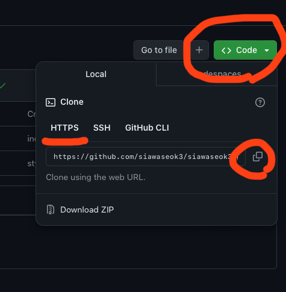
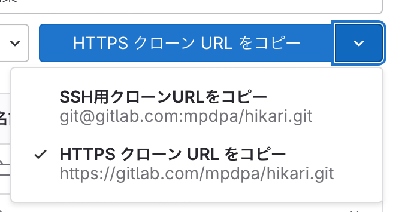

YukiYouTubeの作り方
初めに
- RenderとGitHubまたはGitLabでアカウントを作成。
- RenderとGitHubまたはGitLabのアカウントを紐付けておくと便利です。
リポジトリの作成
GitHubの場合
- https://github.com/siawaseok3/slim-2-by-siawaseokかhttps://github.com/mochidukiyukimi/yuki-youtube-slim-2.git(公式)を開く。
- リポジトリをフォークする。
（偽装ページを変更したい場合は、自分がフォークしたリポジトリのblog/index.htmlファイルを編集してください）
GitLabの場合
- https://gitlab.com/projects/new#import_projectを開く → URLごとのリポジトリを選択。
- https://github.com/siawaseok3/yuki-by-siawaseok.git か
https://github.com/mochidukiyukimi/yuki-youtube-slim-2.git をGitリポジトリのURLって所に貼り付ける
- プロジェクト名に半角英数で好きな文字をいれる
- プロジェクトを作成。
デプロイ
- Render Web Serviceを開く。
- RenderとGitHubまたはGitLabのアカウントを紐付けている場合は、先ほどフォークしたリポジトリを選択。
- その他の場合は、Public Git Repositoryを選択してリポジトリのURLを貼り付け、
 
Connectを押す。
- Name欄の文字を消して、好きな名前に変更（半角英数とハイフンのみ使用可）。
- Start Commandに
uvicorn --port $PORT --host 0.0.0.0 main:appを入力。
- Instance Typeが有料プランになっているので、Freeを選択。
- Deploy Web Serviceを押す。
- デプロイが完了するまで待機。
出来ない人用(？)
- こちらを開く。
- Blueprint Nameに好きな名前(半角英数のみ)を入れて、Deploy Blueprintを押す
https://github.com/siawaseok3/slim-2-by-siawaseok/blob/main/readme.mdこれも見ておくといいかも？